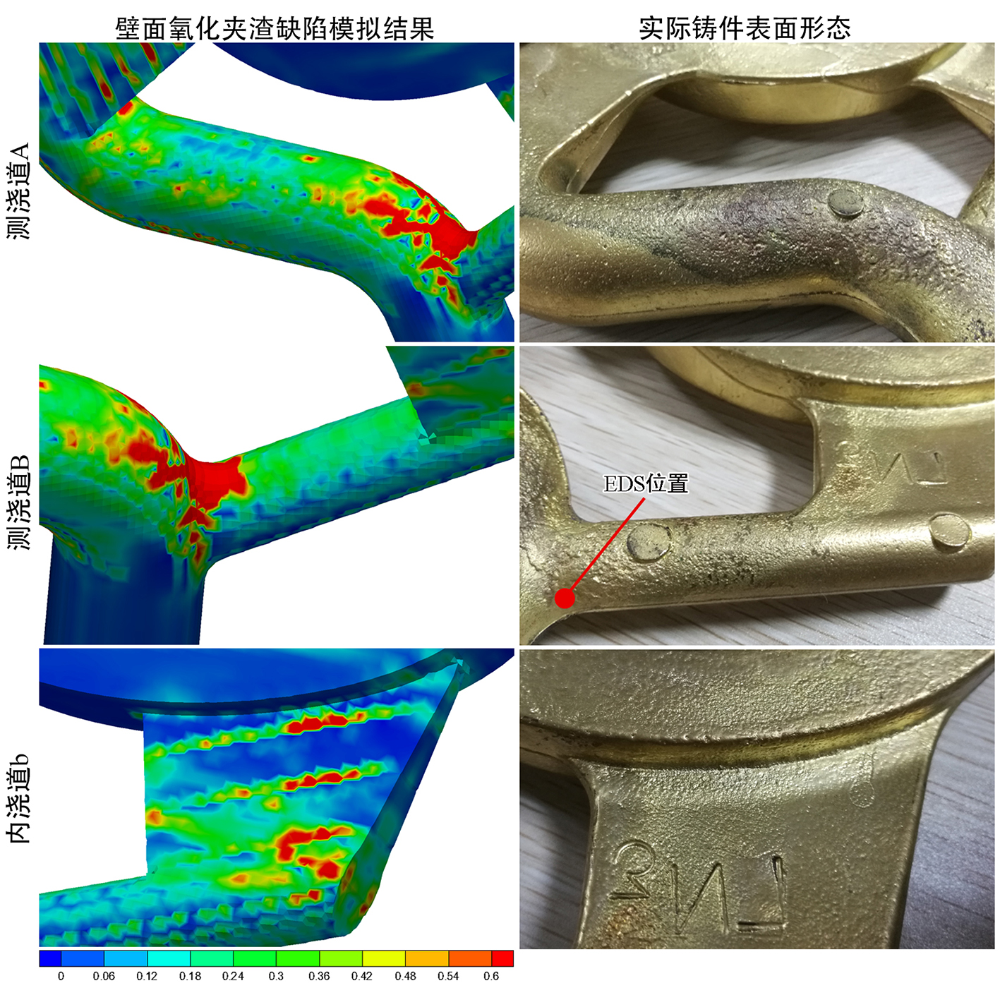
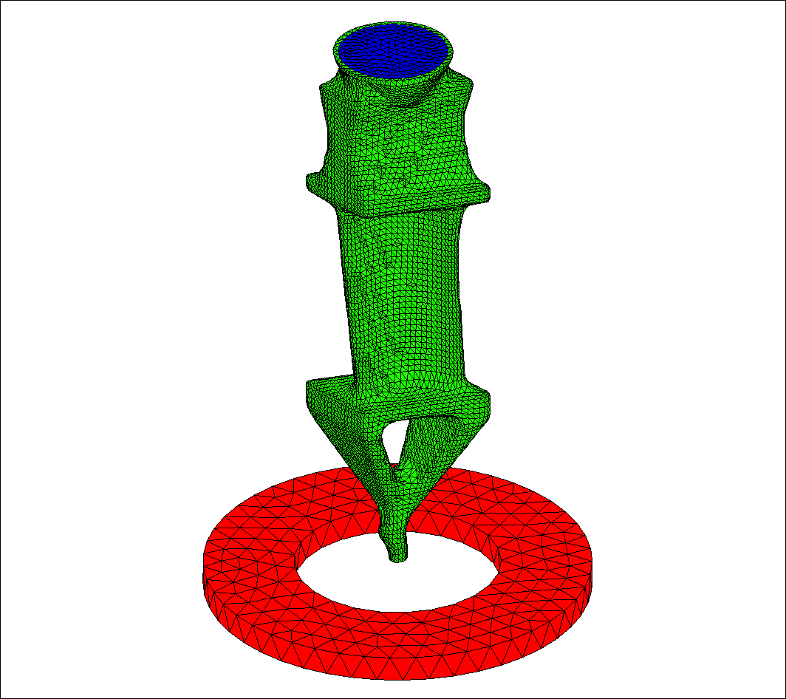
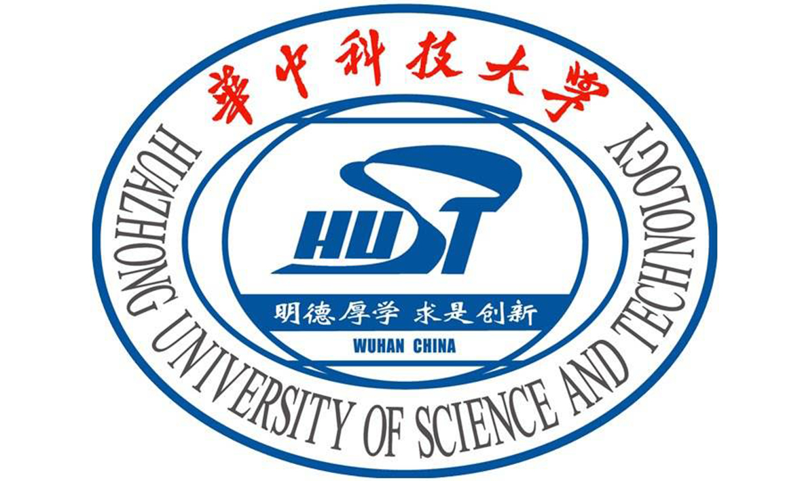

曹 流
最新消息：
成果动画：


教育及科研经历：
教育经历：
科研经历：
期刊论文：

Quantitative prediction of oxide inclusion defects inside the casting and on the walls during cast-filling processes
Liu Cao, Fei Sun*, Tao Chen, Yulong Tang, Dunming Liao
期刊：International Journal of Heat and Mass Transfer（JCR2区，Top期刊）
引用：Liu Cao, Fei Sun, Tao Chen, Yulong Tang, Dunming Liao. Quantitative prediction of oxide inclusion defects inside the casting and on the walls during cast-filling processes[J]. International Journal of Heat and Mass Transfer, 2017, DOI: 10.1016/j.ijheatmasstransfer.2017.11.127
摘要：Oxide inclusions are a common defect in casting production, but their formation and evolution processes are difficult to directly observe experimentally. To accurately predict these, one should calculate the formation rate of the oxide inclusion as well as its wall adhesion. Here, we propose a formation rate model that is relevant to the volume fraction of liquid metal, the temperature, and the current oxide inclusion density. A boundary condition was developed to handle the adhesion and accumulation on the wall; thus, a quantitative indicator is available to directly obtain the content of the oxide inclusion defects on different parts. We used the open source computational fluid dynamics (CFD) software OpenFOAM to predict oxide inclusion defects inside the casting and on the walls during cast-filling processes. A representative aluminum alloy-casting technology was simulated to analyze the effects of different runner systems on the oxide inclusion distributions inside casting and on the wall. The simulation results largely coincide with experimental data from the literature. A practical copper alloy-casting technology was then calculated, and the simulation results of the oxide inclusion defects are consistent with the actual casting defect distribution. This confirms the utility of the model.

Prediction of gas entrapment defects during zinc alloy high-pressure die casting based on gas-liquid multiphase flow model
Liu Cao, Dunming Liao*, Fei Sun, Tao Chen, Zihao Teng, Yulong Tang
引用：Liu Cao, Dunming Liao, Fei Sun, Tao Chen, Zihao Teng, Yulong Tang. Prediction of gas entrapment defects during zinc alloy high-pressure die casting based on gas-liquid multiphase flow model[J]. International Journal of Advanced Manufacturing Technology, 2017, DOI: 10.1007/s00170-017-0926-5
摘要：Zinc alloy is the preferred material for high-pressure die casting (HPDC) production because of its good casting and mechanical properties, and the most common problem in zinc alloy die casting is gas entrapment. A gas-liquid multiphase flow model was here used to predict the gas entrapment defects during the zinc alloy HPDC filling process, and the continuum surface force (CSF) model was used to treat the surface tension of gas-liquid multiphase. In addition, finite volume method (FVM) was used for discretization equations; the pressure implicit with splitting of operator (PISO) algorithm was used for coupling pressure and velocity; and the volume of fluid (VOF) algorithm was used for interface tracking. A water filling experiment was simulated in an S-shaped channel and the simulative results were closely consistent with the experimental results, which indicates the accuracy of the adopted model. Two HPDC zinc alloy filling processes with different ingates were calculated, and the simulative results showed that gas entrapment defects associated with a single ingate were visibly more pronounced than with double ingates, which was basically consistent with the experimental results; therefore, the practicability of the adopted model was confirmed.

铸造充型过程中液固转变影响流动行为的数值计算
曹流, 孙飞*, 陈涛, 滕子浩, 唐玉龙, 廖敦明
期刊：金属学报（JCR4区）
引用：曹流, 孙飞, 陈涛, 滕子浩, 唐玉龙, 廖敦明. 铸造充型过程中液固转变影响流动行为的数值计算[J]. 金属学报, 2017, 53(11): 1521-1531
摘要：为准确预测浇不足及冷隔，在已有的处理液固转变方法基础上，提出基于固相率变化的糊状区流动行为计算模型，该模型可以有效地处理液固转变过程中糊状区不同阶段的流动行为，即高固相率糊状区采用临界固相率方法，低固相率糊状区采用变黏度方法，中等固相率糊状区采用多孔介质拖拽模型。计算了S型铸型水模拟实验，模拟结果与实验结果吻合很好，验证了不考虑液固转变时所采用模型的准确性。针对简单形状的底注式铸造工艺，对比分析了处理液固转变过程中采用不同控制参数的计算效果，证明了糊状区流动行为计算模型的合理性。

铸造宏观过程数值模拟技术的研究现状与展望
廖敦明*, 曹流, 孙飞, 陈涛
期刊：金属学报（JCR4区）
引用：廖敦明, 曹流, 孙飞, 陈涛. 铸造宏观过程数值模拟技术的研究现状与展望[J]. 金属学报, 2017, DOI: 10.11900/0412.1961.2017.00083
摘要：本文综述了铸造宏观过程模拟技术的研究现状。对比了不同流动场模型下铸造充型过程的差别，其中，两相流模型可准确地考虑气相对充型过程的影响。分析了不同应力场模型对铸造应力演变过程的适用程度，并阐明了其发展趋势。说明了适用于铸造宏观过程模拟的物性参数的获取及修正方法，即采用实验手段测量合金成分和液固相线温度，通过物性参数计算软件计算得到合金物性参数并做适当调整，进而结合测温实验对相关参数进行修正。对比了不同铸造工艺下的边界条件，并对高压铸造工艺(速度进口边界)和定向凝固工艺(辐射换热边界)的边界条件进行了说明。对比了不同网格类型的区别，并结合不同网格类型说明了不同数值求解算法的区别，本文认为自适应六面体网格和混合网格类型更适合于有限体积法(充型过程计算)和有限元法(凝固过程和应力计算)。针对各种铸造缺陷，对其预测模型和分析方法进行了说明，并阐明了其发展趋势。
Heat transfer model of directional solidification by LMC process for superalloy casting based on finite element method
Liu Cao, Dunming Liao, Yuzhang Lu*, Tao Chen
引用：Liu Cao, Dunming Liao, Yuzhang Lu, Tao Chen. Heat transfer model of directional solidification by LMC process for superalloy casting based on finite element method[J]. Metallurgical and Materials Transactions A, 2016, 47(9): 4640-4647
摘要：With the rapid development of the aviation industry, the turbine blade, a critical component of the aeronautical engine, has come to be widely produced by liquid-metal cooling (LMC) process. A temperature- and time-dependent heat transfer coefficient was used to represent the heat convection between the shell and the cooling liquid, and an improved Monte Carlo ray tracing approach was adopted to handle the boundary of radiation heat transfer. Unstructured mesh was used to fit the irregular shell boundary, and the heat transfer model of directional solidification (DS) by LMC process based on finite element method (FEM) was established. The concept of local matrix was here proposed to guarantee computational efficiency. The pouring experiments of directional solidification by LMC process were carried out, then simulation and experimental results were here compared. The accuracy of the heat transfer model was validated by the cooling curves and grain morphology, and the maximum relative error between simulation and experimental cooling curve was 2%. The withdrawal rate showed an important influence on the shape of solidification interface, and stray grain is liable to be generated on the bottom of platform at an excessive withdrawal rate.
Radiation heat transfer model for complex superalloy turbine blade in directional solidification process based on finite element method
Dunming Liao, Liu Cao, Tao Chen*, Fei Sun, Yongzhen Jia, Zihao Teng, Yulong Tang
期刊：China Foundry（JCR4区）
引用：Dunming Liao, Liu Cao, Tao Chen, Fei Sun, Yongzhen Jia, Zihao Teng, Yulong Tang. Radiation heat transfer model for complex superalloy turbine blade in directional solidification process based on finite element method[J]. China Foundry, 2016, 13(2): 123-132
摘要：For the sake of more accurate shell boundary and calculation of radiation heat transfer in Directional Solidification (DS) process, a radiation heat transfer model based on Finite Element Method (FEM) is developed in this study. The key technologies, such as distinguishing boundaries automatically, local matrix and lumped heat capacity matrix, are also stated. So as to analyze the effect of withdrawing rate on DS process, the solidification processes of a complex superalloy turbine blade in High Rate Solidification (HRS) process with different withdrawing rates are simulated, meanwhile, the most suitable withdrawing rate is supposed to be 5.0 mm·min-1 by comparing the simulation results. Eventually, the correctness and reliability of the radiation heat transfer model are verified, because of the accordance of simulation results with practical process.

基于有限元法的多材质铸造温度场模拟软件开发
曹流, 廖敦明*, 周聪, 陈涛, 周建新, 庞盛永
期刊：特种铸造及有色合金（中文核心）
引用：曹流, 廖敦明, 周聪, 陈涛, 庞盛永, 周建新. 基于有限元法的多材质铸造温度场模拟软件开发[J]. 特种铸造及有色合金, 2015, 35(11): 1163-1166
摘要：本文以瞬态的傅里叶导热微分方程为基础，提出了一种处理多材质铸造过程边界条件的通用化方法，自主开发了基于有限元法（FEM）的多材质铸造过程温度场数值模拟程序，通过计算典型工字件空冷过程温度场以及多材质复杂铝合金铸件凝固过程温度场，并与ANSYS以及华铸CAE的模拟结果进行了对比，对比结果吻合良好，其中空冷过程温度场的相对误差在1‰数量级，凝固过程温度场的相对误差在1％数量级，验证了温度场程序的正确性以及可靠性。

基于有限元法的熔模铸造过程温度场模拟软件自主开发
曹流, 廖敦明*, 曹腊梅, 谷怀鹏, 陈涛, 庞盛永
期刊：铸造（中文核心）
引用：曹流, 廖敦明, 曹腊梅, 谷怀鹏, 陈涛, 庞盛永. 基于有限元法的熔模铸造过程温度场模拟软件自主开发[J]. 铸造, 2014, 163(12): 1235-1240
摘要：针对熔模铸造中型壳的随型特点，提出了一种处理不规则铸型边界的方法，并以瞬态傅里叶导热微分方程为基础，自主开发了基于有限元法（FEM）的熔模铸造温度场数值模拟软件，并阐述了潜热以及集中热容的处理等关键技术。通过一个复杂熔模缸体铸件铸造过程温度场的模拟计算，并与ProCAST的模拟结果进行了对比，发现二者模拟结果基本相近，凝固过程温度场的最大相对误差为1.113％，验证了所开发的温度场程序的正确性和可靠性。
发明专利：
毕业论文：

铸造充型过程中成形类缺陷演化机理及数值模拟研究
博士毕业论文
关键词：铸造充型；成形类缺陷；数值模拟；冷隔；氧化夹渣；OpenFOAM
引用：曹流. 铸造充型过程中成形类缺陷演化机理及数值模拟研究[D]. 武汉: 华中科技大学, 2018
主要内容：缺陷预测及工艺优化是铸造宏观过程模拟的最终目的，而铸造充型过程中可能产生的成形类缺陷(如卷气、浇不足、冷隔和氧化夹渣等)，往往只能借助充型模拟结果间接地分析，未能充分利用数值模拟技术所带来的数字化分析优势。且随着对铸造模拟技术实用化要求的逐步提高，相关缺陷分析方法已满足不了实际生产需求。采用数值模拟手段对铸造充型过程中成形类缺陷进行深入研究，对提高铸件性能和优化铸造工艺有着十分巨大的价值。本文对铸造充型过程成形类缺陷数值模拟所涉及的各个方面进行了深入的研究和探讨，包括铸造充型过程多相流数学建模、冷隔缺陷演化机理及预测和氧化夹渣缺陷演化机理及预测等。同时，本文基于计算流体力学开源代码完成了相关求解器的开发工作，有助于广大科研工作者深入研究铸造充型过程数值模拟技术。

基于有限元法的定向凝固过程温度场数值模拟的研究
硕士毕业论文
关键词：定向凝固；数值模拟；有限元法；高速凝固法；液态金属冷却法；辐射换热；盒子树法；G/L判据
引用：曹流. 基于有限元法的定向凝固过程温度场数值模拟的研究[D]. 武汉: 华中科技大学, 2015
主要内容：在航空航天领域中，主要采用定向凝固工艺生产涡轮叶片，而高性能的涡轮叶片一直是阻碍我国实现“大飞机”梦的最大障碍。实际定向凝固过程是十分复杂的材料成形过程，而且需要特别考虑辐射换热的影响。采用定向凝固温度场模拟技术，能够对铸件在凝固过程中的温度场演变过程进行有效的分析，预测可能出现的缺陷，为优化定向凝固工艺提供理论指导。本文对有限元定向凝固温度场数值模拟所涉及的各个方面进行了深入研究，包括定向凝固温度场数学建模、有限元数值求解、液态金属冷却液换热处理和定向凝固温度场分析判据等，开发了有限元定向凝固温度场数值模拟系统。
其他期刊论文：
学术会议：
指导学生：
暂无。
教学：
暂无。
学术背景：

华中科技大学是国家教育部直属的全国重点大学，由原华中理工大学、同济医科大学、武汉城市建设学院于2000年5月26日合并成立，是首批列入国家“211工程”重点建设和国家“985工程”建设高校之一。
在2009年至2018年期间，我于华中科技大学攻读学士、硕士以及博士学位（2009-2013 学士；2013-2015 硕士；2015-2018 博士）。